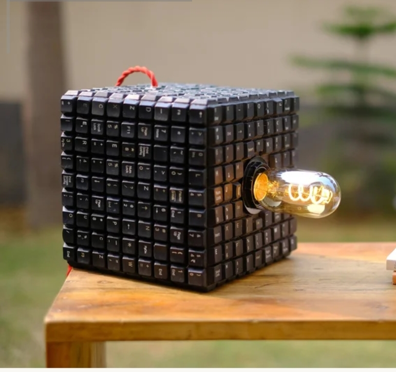

A. Bahan
- Keyboard Bekas
- Lampu LED String (baterai)
- Kertas Timah & Kain Flanel
- Karet Kaki alat
Keyboard bekas yang sudah tidak digunakan bisa diubah menjadi lampu hias yang fungsional dan minimalis.

| No | Bahan | Harga |
|---|---|---|
| 1 | Keyboard Bekas | Rp 25.000 |
| 2 | Lampu LED String (baterai) | Rp 25.000 |
| 3 | Kertas Timah & Kain Flanel | Rp 15.000 |
| 4 | Karet Kaki Alas | Rp 5.000 |
| Total | Rp 70.000 | |
Perkiraan harga jual keyboard: Rp90.000
Laba (harga jual - harga modal): 90.000 - 70.000 = Rp20.000